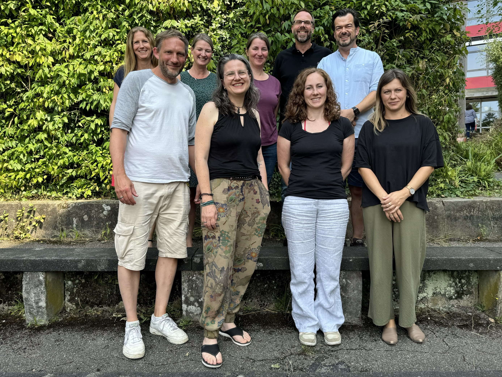

Biologie am NCG
“Biologie wird im 21. Jahrhundert den heutigen Rang von Chemie und Physik einnehmen”. John Naisbitt (*1930)
Herzlich Willkommen auf der Informationsseite der Fachschaft Biologie am Nicolaus-Cusanus-Gymnasium in Bergisch Gladbach. Hier findest du alle wichtigen Informationen zum Fach Biologie.
Was ist Biologie?
Biologie bedeutet „Lehre des Lebens“. Wir beschäftigen uns mit Tieren, Pflanzen, Menschen, Mikroorganismen und vielen spannenden Fragen des Lebens.
Beispiele: Wie funktioniert der Körper? Was ist Gentechnik? Wie entstehen Krankheiten?
Unterricht am NCG
Der Unterricht findet in den Jahrgangsstufen 5, 6 und 8 zweistündig statt, in 9 und 10 halbjährlich. Biologie ist ein mündliches Fach.
Wir arbeiten mit Experimenten, Mikroskopen, Exkursionen (Wald, Strunde, Neanderthal) und digitalen Medien.
In der Oberstufe gibt es Grund- und Leistungskurse mit Themen wie Genetik, Ökologie, Neurobiologie und Evolution.
Unsere Fachschaft

- Sandra Sulski
- Alexander Kuhlmann
- Dörte Mehrens
- Sandra Doth
- Raphaela Schiffmann
- Volker Weißenberg
- Ellen Dlaske
- Jörn Spillmann
- Julia Langemann